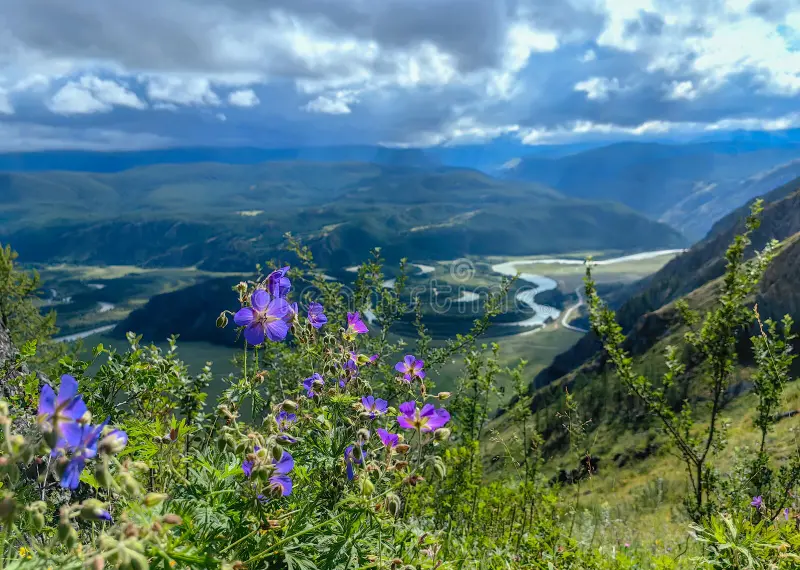

Valle de Tierras Altas
Paisaje natural que muestra montañas cubiertas de vegetación, un pequeño riachuelo y una carretera en primer plano.
El Despertar del Gigante de Granito
El agua fluye con fuerza eterna entre rocas oscuras, mientras la luz del amanecer corona de nubes las imponentes cumbres de la Patagonia, creando un santuario de paz salvaje.
El Refugio Secreto de las Highlands
Cascadas de agua mística fluyen suavemente hacia pozas cristalinas, cobijadas por montañas de tonos púrpuras y un cielo nublado que evoca las leyendas celtas más antiguas de la Isla de Skye.

El Despertar de la Tundra
Descripción: La delicadeza de la flora silvestre se encuentra con la inmensidad de la tierra salvaje, creando un rincón de paz eterna donde el agua dibuja curvas perfectas en el corazón de las montañas.